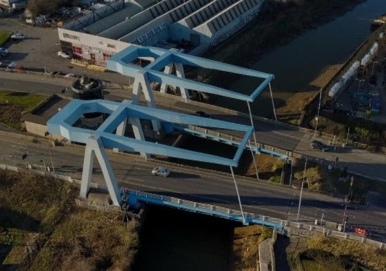
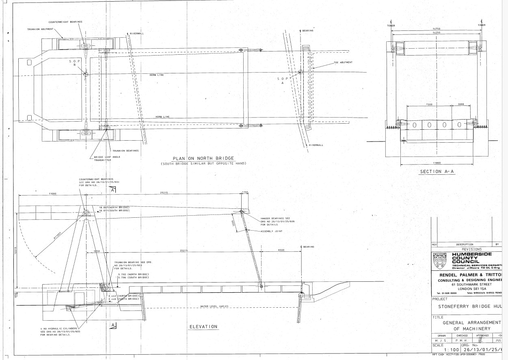
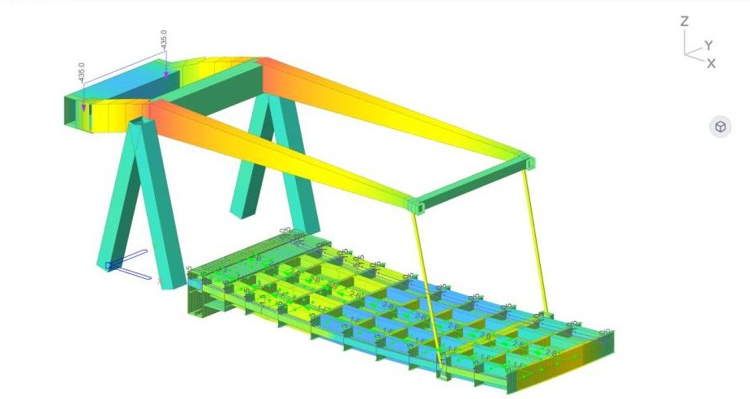
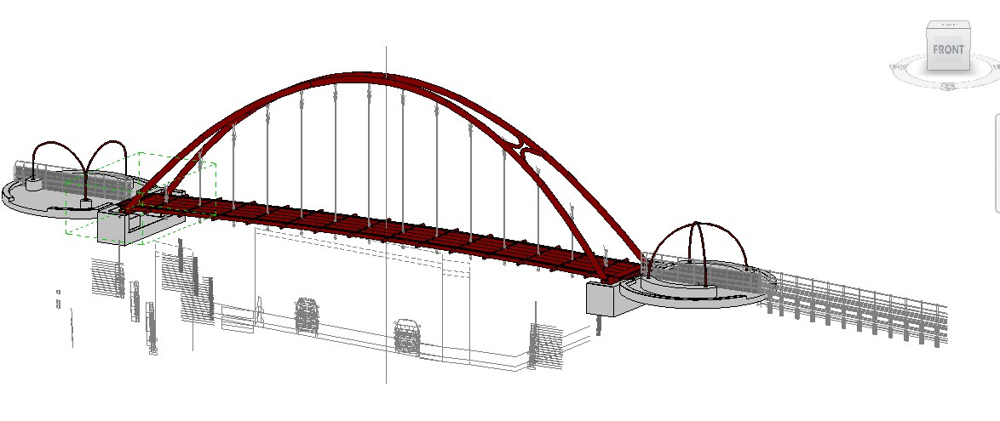
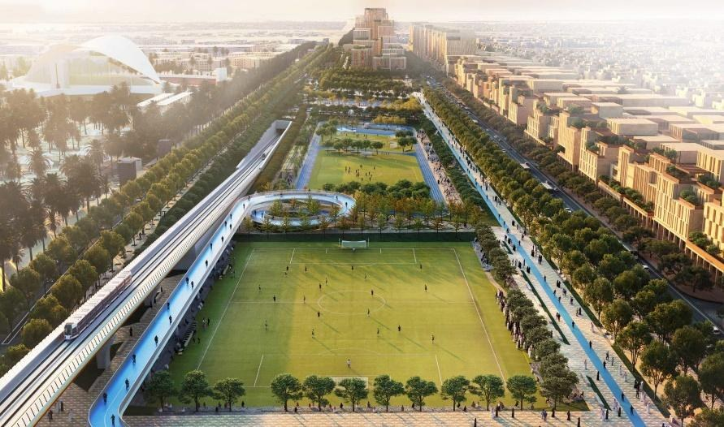
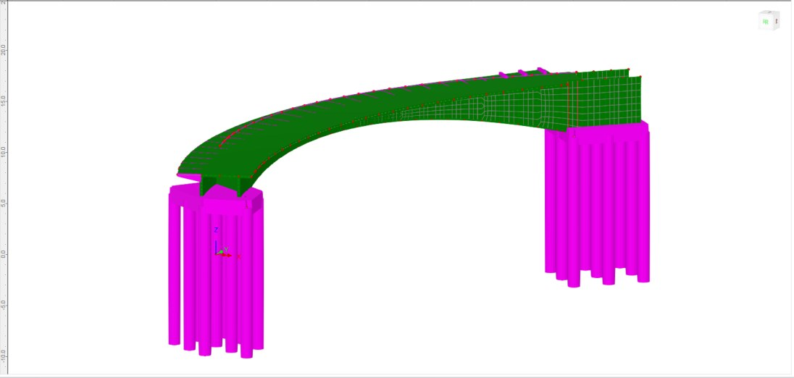
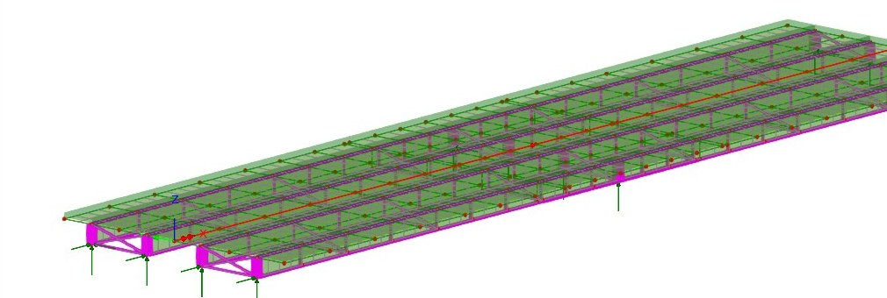

Industry Experience
Buro Happold Internship: Bridges & Civils
Summer internship in Buro Happold's Bridges & Civils team in Edinburgh (July to August 2026). I worked on live projects covering bridge assessment, retaining wall design and embodied carbon, alongside training in LUSAS and Midas Civil.
Stoneferry Bridge, Hull: Category III check
Stoneferry Bridge is a pair of single-leaf bascule bridges carrying a main road over the River Hull. The bearings needed replacing, and my job was to work out the loads they have to carry. This was my main project of the summer, and I took it from the original drawings through to a report for the engineers.

From archive drawings to a 3D model
The only record of the structure was a set of original hand-drawn drawings. They are decades old, not in CAD, and not every dimension or detail was recorded. I interpreted them, using engineering judgement to fill the gaps where information was missing, and turned them into a 3D model in Midas Civil.

Loading and analysis
I derived the full loading regime to the Eurocodes and UK National Annexes: vehicle traffic, footway loading, wind, thermal, snow and kerb collision. I then set up ULS, SLS and accidental load combinations to EC0 and analysed the bridge in both its open and closed positions.

Result and report
From the analysis I extracted the bearing reactions needed for the replacement design, checking key values from first principles. I then wrote a technical report for the project engineers setting out the method, assumptions and results.
Embodied carbon: Infrastructure Performance Dashboard
I contributed to Buro Happold's Infrastructure Performance Dashboard, an extension of the firm's Building Performance Dashboard that tracks carbon data against its Net Zero 2030 targets and PAS 2080 certification. I reviewed the existing carbon database, helped pick suitable bridge projects for the baseline, and prepared their embodied carbon data for the central system.
I assessed projects ranging from AELTC Wimbledon (five bridges, an 800m timber boardwalk and precast ring beams) to Chelmer Waterside's 50m weathering steel arch bridge and South-West Exeter's steel arch bridge. The most involved were A33 Reading South and Sports Boulevard in Riyadh (3.3km of retaining walls), where I audited and rebuilt full carbon workbooks from Revit model data using NZBG methodology and ICE Database factors, resolving wastage and double-counting issues so the figures were consistent across projects.


Riyadh Expo bridges: reinforcement benchmarking
For a feasibility and benchmarking exercise on bridges for the Riyadh Expo development, I worked through structural drawings and bar schedules for abutments, piers and pile caps. I converted bar sizes and spacings into steel quantities to find the reinforcement density (kg/m³) of each element, producing early-stage benchmarks for design and cost planning.
Windsor Bridge: retaining wall design review
I reviewed the retaining wall calculations for the Windsor Bridge project (Category II check), covering sliding, overturning and bearing pressure as well as the reinforcement design for the stem and base. I independently verified key values such as earth pressure coefficients, eccentricity, bending reinforcement and shear capacity to Eurocodes 2 and 7, and raised the points needing clarification with the original designer.
Software training
Alongside project work I built analysis models in LUSAS and Midas Civil, from 2D linear elastic and portal frame analysis to full bridge models, and attended Buro Happold technical sessions including one on the BHoM, the firm's open-source tool for linking different engineering software.

